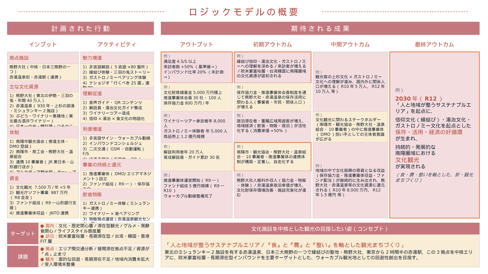

文化観光推進法に基づく令和8年度 地域計画 認定申請（赤湯&南陽市・熊野大社×赤湯温泉×赤湯駅）の統合管理ページ。ダッシュボードと流用可能性分析（差分・補助金重複ルール・施設別充当・ロジックモデル含む全構成）をタブで切り替えられます。
「人と地域が整うサステナブルエリア／『食』と『農』と『整い』を軸とした観光まちづくり」
東北のミシュランキー3つのうち2つを有するガストロノミーのエリア・赤湯温泉、日本三大熊野の一つで縁結びの聖地・熊野大社、東京から2時間半の赤湯駅 ― この3拠点を中核エリアとし、欧米豪富裕層・長期滞在型インバウンドを主要ターゲットとした、ウォーカブル観光地としての回遊性創出を目指す。
| 事業者 | 代表者 | 担当者 | 担当業務（地域計画における役割） |
|---|---|---|---|
| 南陽市観光協会申請主体 | 結城 秀人（会長） | 櫻井 義大（事務局長） | プロジェクトリーダー／本事業全体の統括・進捗管理／観光まちづくりビジョン案策定推進／推進事業体組成検討 |
| 南陽市 | 白岩 孝夫（市長） | 渡邊 正規（商工観光課長） | 域内合意形成支援／民間事業者を巻き込んだ中期観光振興計画に関する協議・調整 |
| 南陽市商工会 | 菅野 直彦（会長） | 岸 恭平 | 市内民間事業者との連携支援 |
| 宗教法人 熊野大社中核施設 | 北野 達（宮司） | 北野 淑人（権禰宜） | 歴史・文化の主要連携先／回遊性をもつ動線構築に係る調査・提案 |
| 赤湯温泉旅館協同組合観光主軸 | 丸森 周平（組合長） | 須藤 宏介（副組合長） | 観光の主要連携先／滞在拠点整備等に係る調査・検討・事業性調査 |
| 赤湯温泉料理飲食店組合 | 渡部 英孝（組合長） | 渡部 英孝 | 食分野の主要連携先／ガストロノミー・ローカル体験事業 |
| 赤湯駅（JR東日本）回遊網 | 入間川 悟（米沢駅長） | 入間川 悟 | 観光主要スポット拠点／回遊・周遊を目指した移動網構築 |
| 銀行団／株式会社山形銀行 | 三坂 英彦（南陽支店長） | 三坂 英彦 | ファンドの組成支援／ファイナンス計画作成アドバイザー |
| やまがたアルカディア観光局DMO登録 | 内谷 重治（理事長） | 佐藤 和之／鷲見 孝 | 住民・事業者アンケート実施／ブランディング・PR戦略策定 |
| Bina合同会社 | 小坂 典子（代表社員） | 小坂 典子 | 推進事業体設立F/S／面的開発コンセプトF/S／移動網F/S |
| プラットヨネザワ株式会社中核連携DMO登録 | 宮嶌 浩聡（CEO） | 小田 航平（COO） | 事業者ワークショップ企画・運営／観光まちづくりビジョン案策定／プロジェクト全体マネジメント支援 |
流用率：約80〜90% 南陽市観光協会のR8観光庁ソフト事業申請（987万円）が、本事業のコンセプト・観光資源整理・連携体制・KGI/KPI骨格までほぼ完成形で設計されているため、米沢レキマチ案件より高い流用率を実現可能。同事業の戦略文書「整う観光まちづくり」は、文化観光推進法の趣旨と高度に整合。
必要な作業は主に ①観光フレームから文化観光フレームへの言語翻訳、②文化資源（熊野大社・赤湯温泉・つるのこ）の保存・継承の観点強化、③文化庁固有書類（ロジックモデル・概要資料）の新規作成。連携10事業者の同意書取得済み・KPI骨格策定済み・年次別ロードマップ（R8〜R12）策定済みのため、計画書の「中身」は既存資産で90%以上カバー可能。
凡例：90%+ほぼそのまま流用 70-90%軽微な修正で流用 40-70%再構成が必要 〜40%新規作成寄り
| 成果物カテゴリ | 既存資産（R8観光庁ソフト事業） | 流用度 | 必要な作業 |
|---|---|---|---|
| ① 戦略コンセプト | 「整う観光まちづくり」「人と地域が整うサステナブルエリア」「食×農×整い」 | 95% | そのまま流用。文化観光フレームでは「文化資源を起点とした好循環」を上位概念として接続 |
| ② 観光資源整理 | 歴史文化（熊野大社・赤湯温泉・つるのこ）／食農（米・ワイン・鯉料理）／自然（雲海） | 95% | そのまま流用。文化資源としての価値づけ強化 |
| ③ 中核施設・連携施設 | 熊野大社（中核）／赤湯温泉街／赤湯駅／漆山地区つるのこ | 95% | 地域計画の「中核施設」「連携施設」として再分類のみ |
| ④ ターゲット層設定 | 欧米豪富裕層・長期滞在インバウンド／国内ライフスタイル感度層 | 90% | 「文化的・歴史的背景の理解を深める来訪者」として再ラベリング |
| ⑤ SWOT分析 | 豊かな食文化・ガストロノミー／顔の見える関係性／ガストロノミー需要拡大／訪日外国人増加 | 90% | 「文化資源」「文化観光」の文脈で再構成 |
| ⑥ 連携体制（10事業者） | 南陽市・商工会・熊野大社・温泉組合・料飲組合・JR東日本・山形銀行・アルカディア・Bina・プラットヨネザワ | 90% | ★地域計画必須「連携合意書」を観光庁同意書から作成（再合意取得） |
| ⑦ KGI/KPI骨格 | R8観光まちづくりビジョン策定／推進事業体F/S／ワークショップ5回／アンケート300件 | 85% | 5年計画KPIに延伸（来訪者数・インバウンド比率・消費単価・文化財理解度等） |
| ⑧ 年次別ロードマップ R8〜R12 | R9設立着手／R10投資拡張／R11自走発信 | 85% | 文化観光推進法の5年計画フォーマットに整理 |
| ⑨ 経費構造・経費区分 | R8 987.35万円（人件費・旅費・謝金・広告・借料・再委託費） | 75% | 5年計画ベースの経費計画に拡張。文化観光対象経費に再構成 |
| ⑩ 申請書本文（地域計画 様式） | R8申請書の「事業内容」「地域の課題」「達成目標」 | 75% | 文化庁様式に転記。文化観光フレームへ言語翻訳 |
| ⑪ 概要資料（PowerPoint） | R8申請書のPPT様式5（事業概要1枚） | 70% | 文化庁指定様式（92787101_15）に再構成 |
| ⑫ ロジックモデル | —（R8申請には該当書類なし） | 25% | 新規作成必須。下記「📐 ロジックモデル ドラフト」に1ページ完結版あり |
| ⑬ 連携合意書（地域計画特有） | R8申請時の「申請事業者との連携に関する同意書」（10事業者） | 80% | ★地域計画必須。文化観光推進法用に再発行（5/18までに署名取得） |
| ⑭ 文化財保存・継承の観点 | —（R8は観光振興主軸のため明示薄い） | 30% | 新規記述。熊野大社の信仰文化保存／赤湯温泉の湯治文化継承 |
| ⑮ JNTOとの海外発信連携 | —（アルカディア観光局のブランディング戦略あり） | 50% | JNTO海外宣伝活用計画を新規記述 |
| ⑯ 経済循環・再投資メカニズム | R9〜R11ファンド組成・推進事業体収益化計画 | 75% | 「文化への再投資」の循環構造を明示する図表に再構成 |
| ⑰ 先進地視察計画 | 草津温泉視察・東京JR東日本視察（R8予定） | 95% | そのまま流用。文化観光認定事例も追加可能 |
R8観光庁ソフト事業（南陽市観光協会主導）と文化観光推進法地域計画（南陽市観光協会＋プラットヨネザワ）を並走運用することで、相互補完的に成果を最大化します。
2制度を組み合わせた場合の最大調達額試算。観光庁ソフトはR8単年・文化観光は5年継続のため、重複リスクは低く相互補完しやすい。
| 事業 | 所管 | 補助率 | 補助上限 | 主用途 |
|---|---|---|---|---|
| R8観光庁ソフト事業 | 観光庁 | 定額 | 987.35万円 | 観光まちづくりビジョン策定・推進事業体F/S |
| 文化観光推進法（年） | 文化庁 | 2/3 | 7,500万円 | 文化資源活用・解説情報整備・多言語化・人材育成 |
| 文化観光推進法（5年合計上限） | 文化庁 | 2/3 | 37,500万円 | ※毎年度審査（4・5年目は中間評価） |
| 単年（R8）2制度上限合計 | 8,487.35万円 | ※R8のみソフト事業並走 | ||
| 5年累積 上限合計（理論値） | 38,487.35万円 | ※観光庁ソフト1年＋文化観光5年 | ||
| 経費種別 | R8観光庁ソフト | 文化観光（文化庁） | 運用上の留意点 |
|---|---|---|---|
| 観光まちづくりビジョン策定費 | ○ | △ | R8観光庁で策定済。文化観光側は「文化観光化リライト」「年次更新」のみ対象可 |
| 推進事業体（DMO）設立F/S・組成検討 | ○ | △ | R8観光庁でF/S。文化観光側はR9以降の運営費・運営人材育成に充当 |
| 事業者ワークショップ（R8 5回開催） | ○ | × | R8観光庁専用。文化観光側はR9以降の継続的なステークホルダー会議が対象 |
| 住民・事業者アンケート（300件） | ○ | △ | R8観光庁実施分は対象外。文化財理解度・来訪者満足度等の追加調査は文化観光対象 |
| 先進地視察（草津温泉・東京JR東日本） | ○ | △ | R8観光庁で実施。文化観光側は文化観光認定事例の追加視察のみ対象 |
| 解説情報整備（学術監修・コンテンツ制作） | × | ○ | 文化観光の主要対象経費。熊野大社の信仰文化解説・赤湯温泉の湯治文化解説 |
| 多言語化（音声ガイド・QRコード・パンフレット） | × | ○ | 文化観光の主要対象経費。欧米豪富裕層向け5言語対応 |
| 体験コンテンツ造成（縁結び・ガストロノミー・湯治） | △ | ○ | R8観光庁はモニター実証、文化観光は本格展開で分離 |
| 人材育成（ガイド研修・運営人材育成） | × | ○ | 文化観光の主要対象経費。学芸員・通訳ガイド・解説員育成 |
| 運営費（人件費・委託費・賃借料） | × | ○ | 文化観光は5年計画の運営費に充当可 |
| JNTOとの海外プロモーション | × | ○ | 文化観光はJNTOとの連携協力が制度上組み込み済。欧米豪富裕層向け |
| 移動網（GSM・自動運転・ライドシェア）F/S | ○ | × | R8観光庁で実施（Bina合同会社が再委託） |
| ファンド組成支援（山形銀行） | ○ | △ | R8観光庁でF/S。文化観光側は文化財修繕基金等の文化目的ファンドのみ対象 |
| ICT・デジタル活用（VR/AR・公式英語サイト・WeChat） | △ | ○ | 文化観光側は解説コンテンツのデジタル化に充当 |
| ブランディング・PR戦略策定（アルカディア観光局再委託） | ○ | △ | R8観光庁で全体戦略策定、文化観光側は文化観光ブランディングに追加充当 |
3拠点中核エリアと連携施設について、文化観光側で何に補助金を充当するかの具体案。
流用マトリクス⑫の 「新規作成必須」 の中核成果物。文化庁公式様式（94343001_01.pptx）の6段階構造に、赤湯&南陽市案件のドラフトを反映した1ページ完結版を作成しました。そのまま正式提出のたたき台として活用可能です。下部に詳細展開（4目標マトリクス／KPIマップ）も用意。

構成：左側「計画された行動」（インプット／アクティビティ）と右側「期待される成果」（アウトプット／初期・中間・最終アウトカム）を縦糸とし、下部にターゲット・課題・コンセプトを配置。 オレンジ枠は文化庁様式で重視される指標箇所をハイライト。 記載値はR8観光庁ソフト事業（南陽市観光協会・987万円）の戦略文書から再構成した初期案。「整う観光まちづくり」コンセプトを文化観光フレームで表現。申請前相談（5/12）で関係者と再検証・合意形成のうえ確定してください。
文化観光推進法が定める4つの目標を行軸、ロジックモデル5段階を列軸とした構造化マトリクス。申請書本文の論理構成にもそのまま流用可能。
| 4つの目標 | ① 投入 | ② 活動 | ③ アウトプット | ④ アウトカム | ⑤ インパクト |
|---|---|---|---|---|---|
| ① 文化資源の魅力発信 | 熊野大社の信仰文化／赤湯温泉の湯治文化／つるのこ伝承／専門家ネットワーク | 多言語解説制作／三羽の兎ストーリーテリング／月結び祈願祭の海外PR／学術監修 | 5言語×80箇所の解説整備／公開イベント年12回／英語ストーリーコンテンツ年30本 | 文化財理解度80%以上／満足度4.5/5以上／SNS発信 年5,000件 | 「Nanyo＝信仰×湯治×食文化」の国際的認知獲得 |
| ② 国内外からの来訪促進 | ナショジオ選出／ミシュランキー2施設／JNTOネットワーク／既存40万人参拝基盤 | JNTO連携海外発信／インバウンドコンシェルジュ配置／ワイナリーツアー造成／ミシュランキー連携 | 海外プロモーション年4回／インバウンドツアー造成20本／公式英語サイト・WeChat開設 | 来訪者数 +50%／外国人比率 20%／欧米豪富裕層宿泊単価 +30% | 2030年「整う観光地」として国際的認知の確立 |
| ③ 地域経済の活性化 | R8観光庁ソフト事業／推進事業体構想／ファンド組成計画 | 商品開発（30SKU）／ガストロノミー体験プログラム／回遊動線整備／GSM・自動運転F/S | 体験プログラム年20本／ブランド商品30SKU／回遊ルート整備／決済多様化 | 商品売上 6,000-8,000万→1.2億円／域内消費額 +50%／事業者売上累計 +10億 | 地域GDP寄与累計50億円超・UIターン促進・新規事業者参入 |
| ④ 文化への再投資の好循環 | 推進事業体（DMO）構想／山形銀行ファンド組成支援／保存協力金制度設計 | 推進事業体設立・運営／保存協力金徴収・還元／文化財修繕基金造成／中間評価対応 | 推進事業体運営開始／保存協力金制度導入／文化財修繕基金設置／年次報告 | 保存協力金収入 年800万／推進事業体補助依存率 50%以下／文化財修繕基金5,000万 | 保存・活用・経済の好循環が制度化され他地域モデルへ波及 |
文化庁が重視する 定量的な成果指標 を、現状値・目標値・測定方法とともに整理。中間評価（4・5年目）に耐える設計。
| KPI指標 | 段階 | 現状（R7） | 中間目標（R10） | 最終目標（R12） | 測定方法 |
|---|---|---|---|---|---|
| 3拠点稼働率（熊野・赤湯温泉・赤湯駅） | アウトプット | — | 80% | 95% | 推進事業体運営報告／施設運営実績 |
| 多言語解説整備件数 | アウトプット | — | 5言語×50箇所 | 5言語×80箇所 | 制作完了報告 |
| 育成解説員・ガイド累計 | アウトプット | — | 15名 | 30名 | 研修修了証発行数 |
| 体験コンテンツ造成数 | アウトプット | — | 年12本 | 年20本 | 推進事業体運営記録 |
| ワイナリーツアー参加者 | アウトプット | — | 年5,000人 | 年8,000人 | ワイナリー連絡会集計 |
| 年間来訪者数 | アウトカム | 基準値測定 | +25% | +50% | 来訪者統計／施設来館者集計 |
| 外国人来訪者比率 | アウトカム | 未計測 | 12% | 20% | 来訪者調査／宿泊統計 |
| 欧米豪富裕層宿泊単価 | アウトカム | 基準値測定 | +15% | +30% | 赤湯温泉旅館組合統計 |
| 来訪者一人当たり消費額 | アウトカム | 基準値測定 | +25% | +50% | 意向調査／POSデータ |
| 文化財理解度（来訪者調査） | アウトカム | — | 65% | 80% | 来訪者アンケート |
| 商品売上規模 | アウトカム | 6,000-8,000万円 | 1億円 | 1.2億円 | 事業者売上集計 |
| 保存協力金 年間収入 | アウトカム | 未導入 | 400万円 | 800万円 | 推進事業体会計報告 |
| 推進事業体補助依存率 | アウトカム | — | 70% | 50%以下 | 推進事業体収支報告 |
| 地域GDP寄与（累計） | インパクト | — | 20億円 | 50億円超 | 経済波及効果分析 |
| 事業者売上拡大（累計） | インパクト | — | +5億円 | +10億円 | 10事業者の売上集計 |
| 文化財修繕基金規模 | インパクト | — | 3,000万円 | 5,000万円 | 基金会計報告 |
| 新規事業者参入数 | インパクト | — | 3社 | 7社 | 商工会登録／推進事業体協定 |